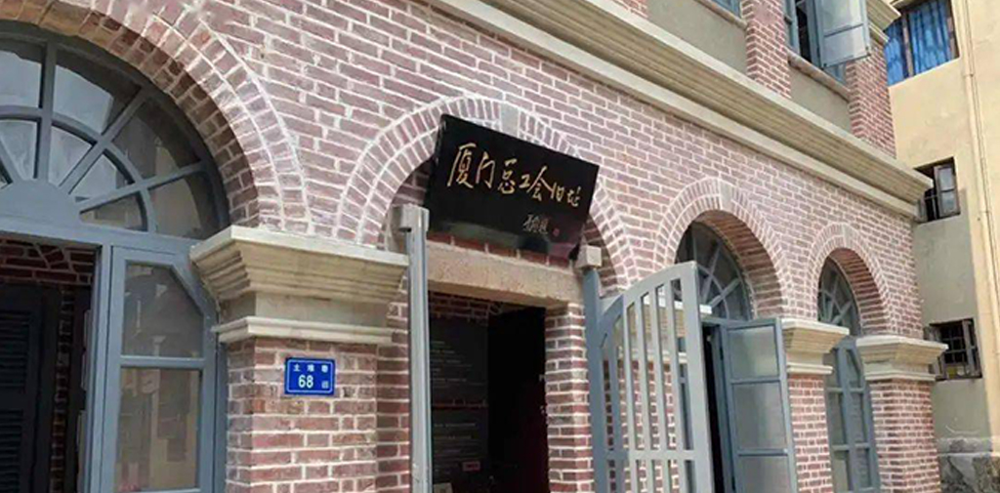
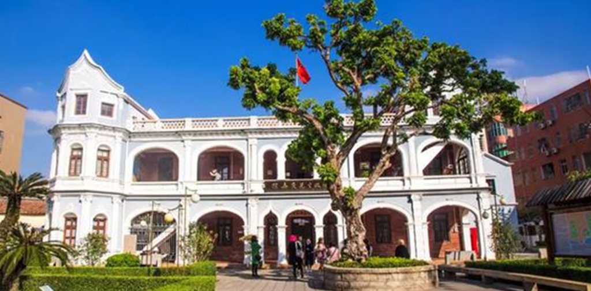
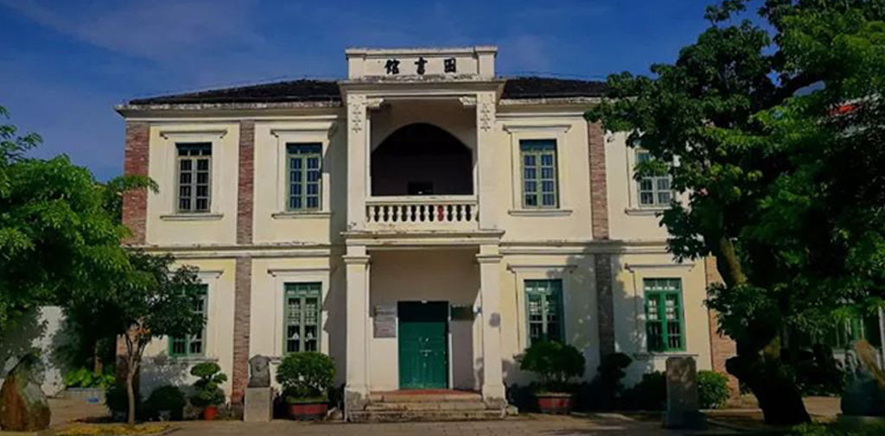
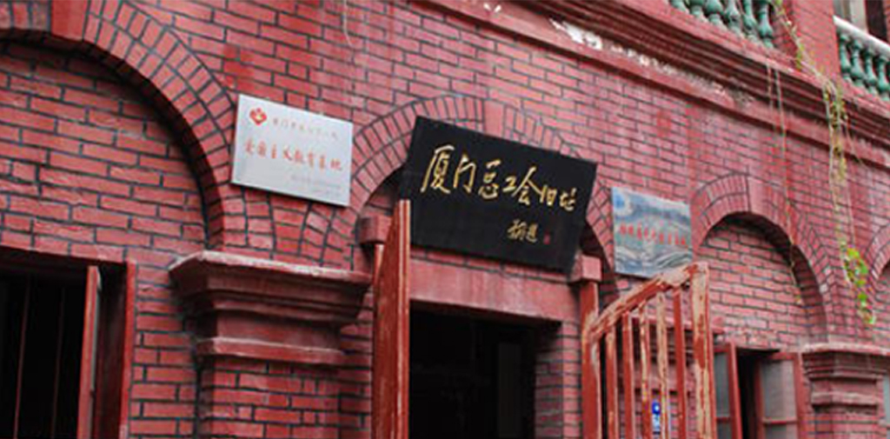

中共闽中厦门工委旧址
来源： 中共闽中厦门工委旧址
   
中共闽中厦门工委旧址是中国历史上特别重要的革命旧址之一，是中国共产党在福建闽南地区奋斗的见证。这座旧址位于厦门市思明区岭林东路，是当年中共在闽南地区的重要指挥机构所在地。该旧址占地面积大约一百六十平方米，由六栋古老建筑组成，包括宿舍、会议室、厨房、卫生间等生活设施。
中共闽中厦门工委所在地的建筑主体是一座两层楼高的建筑，外立面是浅黄色的墙壁，瓦片屋顶，在当时是一栋非常豪华的宏伟建筑。如今的中共闽中厦门工委旧址已经改建成一个革命纪念馆，展览馆内陈列着大量的历史资料、照片、实物等，全面反映了当年中共在闽南地区的领导情况，对于了解中国革命历史和文化，对于铭记先辈的奉献精神和亲身感受革命进程，极为重要.中共闽中厦门工委旧址于1996年被列入厦门市文物保护单位，2001年还被予以保护，成为一个开放的爱国主义教育基地，向人们阐述了南昌起义以来中国共产党在闽南地区奋力前行的历史。在参观工委旧址时，游客们感受到的不仅仅是历史文物的遗存，还有那当年中国共产党为了民族独立、人民解放而英勇斗争的壮烈情景和革命先辈们的崇高品质。
在中共闽中厦门工委旧址参观之余，游客们还可以沿着这条古街散步，充分感受到厦门市的浓郁文化气息。
中共闽中厦门工委旧址所在地周边生活设施齐备，游客们可以在周边随意品尝到当地的特色小吃。例如，岭林池畔就有一个老字号的面摊子，这里的担担面和臭豆腐被誉为厦门市的标志性美食之一。另外，在厦门市各种商业设施如各种大型购物中心和超市内，也可以买到当地特产，例如花生酥、杏仁饼、南普陀酥等，品尝起来异常美味。